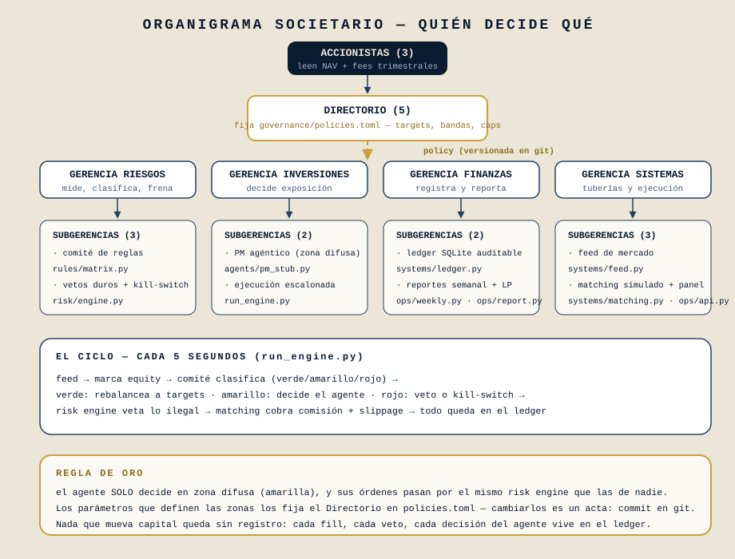
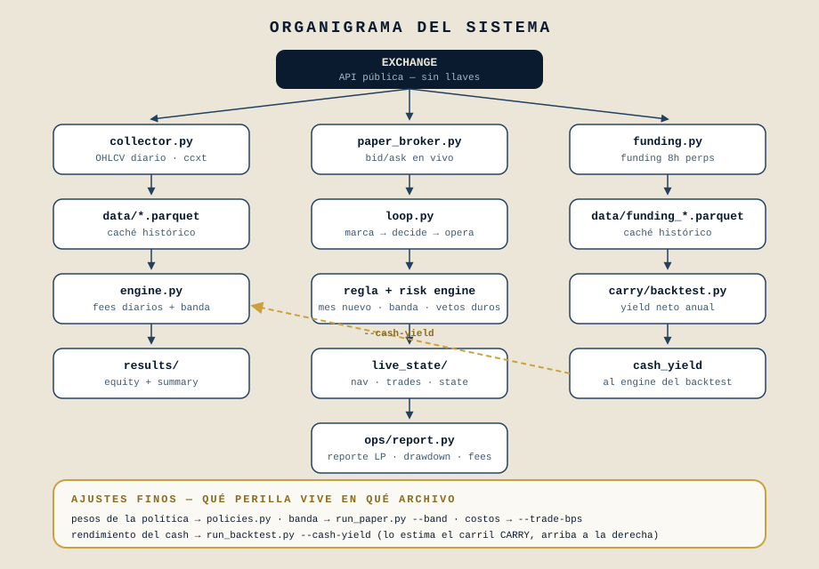
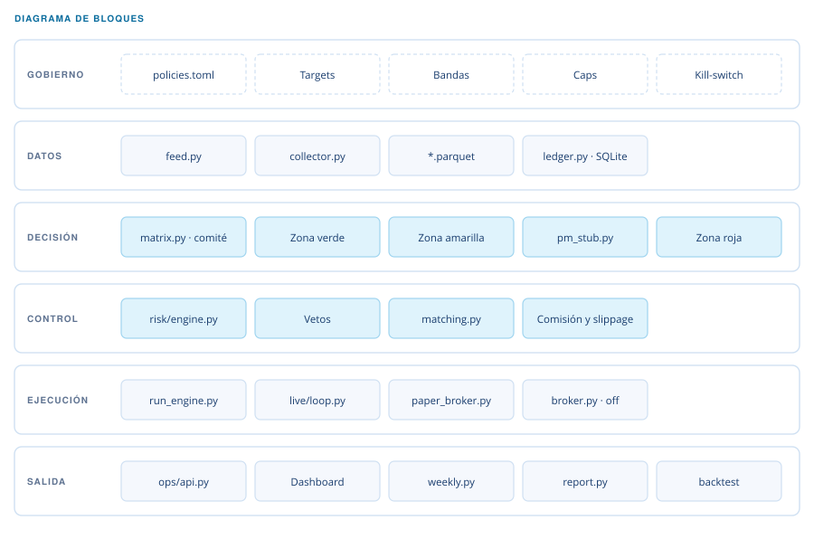

Portfolio Suite
Gestión de portafolio automatizada, con la estructura societaria escrita en código.
Repositorio privado y sistema en desarrollo. La ejecución real está desarmada por defecto; lo que corre hoy es backtest y paper trading.
La tesis
El código determinista toca la plata; los agentes proponen y el código dispone. Todo lo que mueve capital —o simula moverlo— es código probado, sin modelo de lenguaje en el medio. El agente decide solo en la zona difusa, y hasta sus órdenes pasan por el mismo motor de riesgo que las demás.
La idea que ordena el sistema es que un portafolio no se gobierna con una función, se gobierna con una estructura. Así que la estructura está escrita: el Directorio fija targets, bandas, topes y kill-switch en un solo archivo de parámetros, y cambiarlo es literalmente un acta —un commit versionado—. Ningún número de gobierno vive incrustado en la lógica.
- Python
- SQLite WAL
- REST y WebSocket
- Parquet
- ccxt
Las tres zonas del comité
En cada ciclo el comité de reglas clasifica la situación según la desviación respecto de los targets. La zona decide quién manda.
Verde — manda la política
Dentro de banda. Si la desviación pasa el umbral, rebalanceo completo a los targets, escalonado bajo los topes por orden y por ciclo.
Amarilla — decide el agente
La zona difusa entre ambas bandas. Aquí actúa el gestor agéntico, con un contrato fijo: recibe contexto y devuelve órdenes con su fundamento. Hoy es determinista; el contrato ya admite un modelo.
Roja — frena el riesgo
Desviación fuera de banda: rebalanceo forzado. Pérdida diaria bajo el umbral de corte: alto total y rearme manual.
La estructura societaria, en código
Cada nivel de gobierno tiene su contraparte en el repositorio: accionistas que leen NAV y comisiones, un directorio que fija parámetros, y gerencias de riesgos, inversiones, finanzas y sistemas que ejecutan.

Por dónde fluyen los datos

El motor corre contra reloj: trae precios, marca el patrimonio, deja que el comité clasifique, escalona las órdenes bajo los topes, deja que el motor de riesgo vete lo que no pasa y cobra comisión y deslizamiento en el calce. Todo queda en el registro: cada ejecución con su costo y cada decisión con su zona y su autor, política o agente.

El módulo de carry, y lo que no captura
Un carril aparte mide el rendimiento de una posición neutral: largo al contado y corto en perpetuo por el mismo nocional. El precio se cancela y lo que queda es el funding que se cobra cada ocho horas. Con datos reales desde 2019, la mediana anual ronda 8,4 % en bitcoin y 8,9 % en éter, con alrededor de 86 % de los períodos en positivo.
Lo que el modelo no captura. El percentil 10 es negativo: hay semanas en que se paga en lugar de cobrar. Y quedan fuera tres riesgos que importan: contraparte —la pata en perpetuo vive en el exchange—, liquidación de la pata corta y movimientos de basis. Ponerlo por escrito es parte del entregable.
Qué falta
Precios sin retraso
Conectar un feed institucional contra cuenta de práctica, manteniendo la misma interfaz: el motor no cambia una línea.
Modelo en la zona amarilla
Sustituir el gestor determinista por uno con modelo de lenguaje, conservando el contrato. El contexto ya lleva veredicto, pesos, targets y caja.
Conciliación y reporte
Cuadrar el registro contra el exchange y emitir reporte mensual a inversores.
Custodia y estructura legal
El cuello de botella real, y no es técnico.